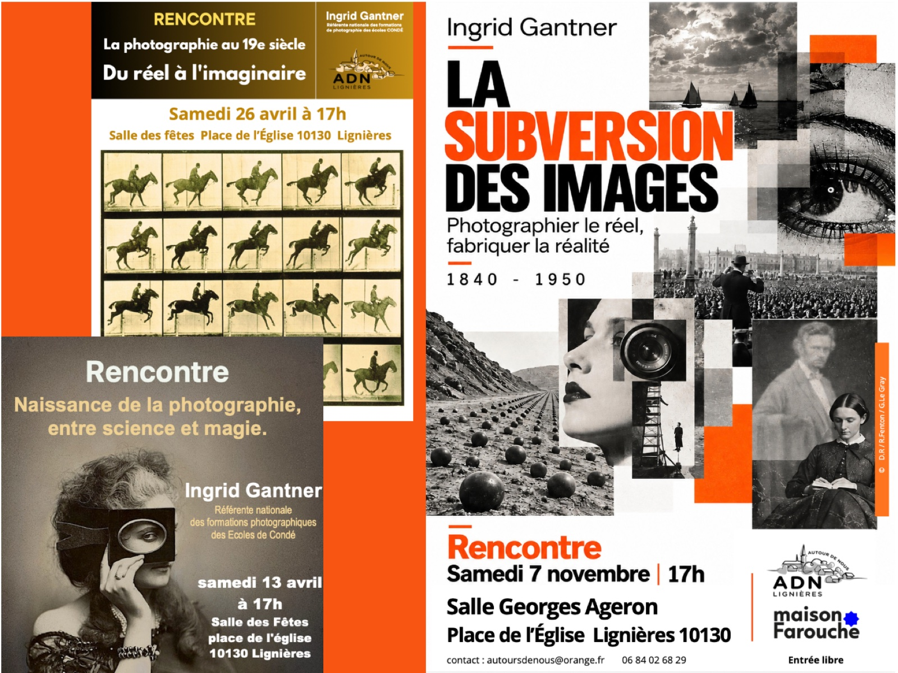
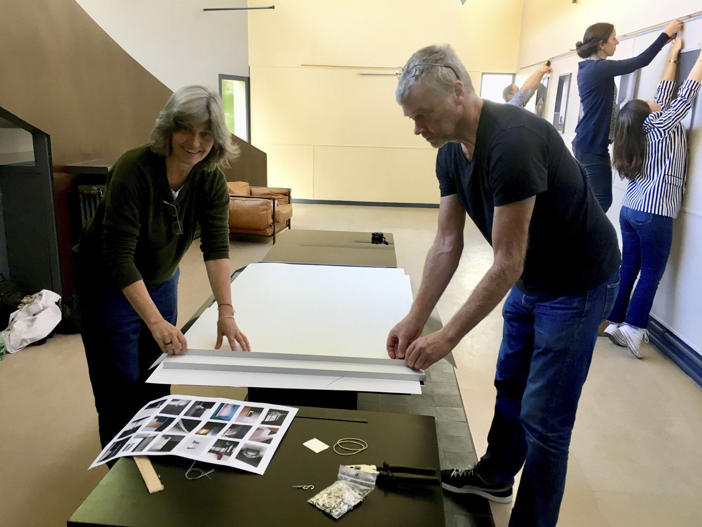
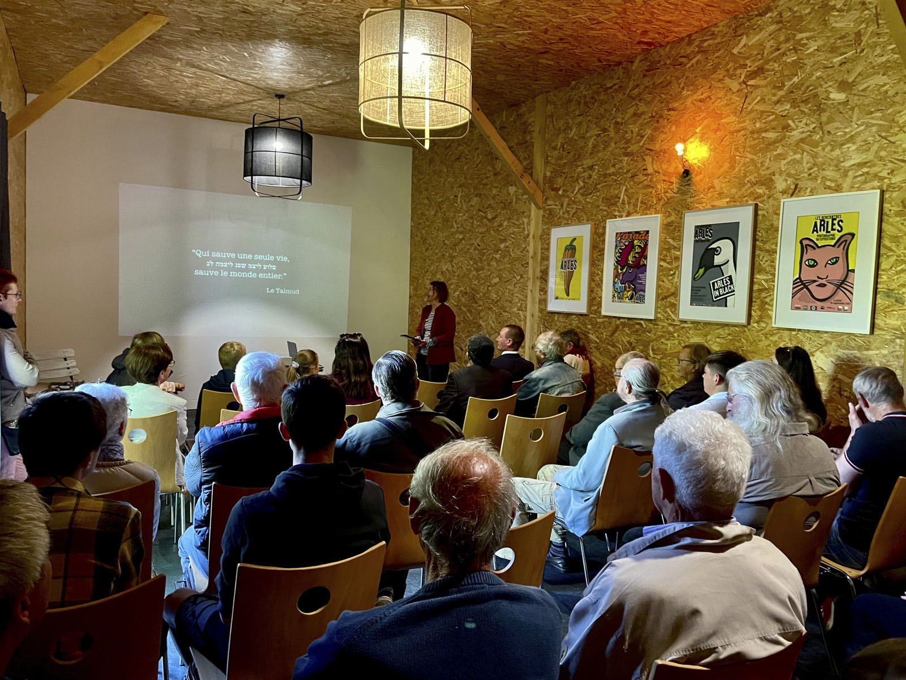

Des pratiques à explorer, des savoirs à partager pour apprendre à voir et faire des images.



Maison Farouche propose des ateliers créatifs, des workshops et des rencontres autour de la photographie et de ses métiers. Des temps pour découvrir des pratiques, développer son regard, explorer de nouvelles techniques et partager des expériences, quel que soit son âge ou son niveau.
Des ateliers d’initiation de quelques heures, des techniques de réalisations avancées sur quelques jours, des sessions pour les professionnels, des conférences et rencontres. Toutes ces activités sont proposées et animées par des professionnels, des artistes, les photographes en résidence.